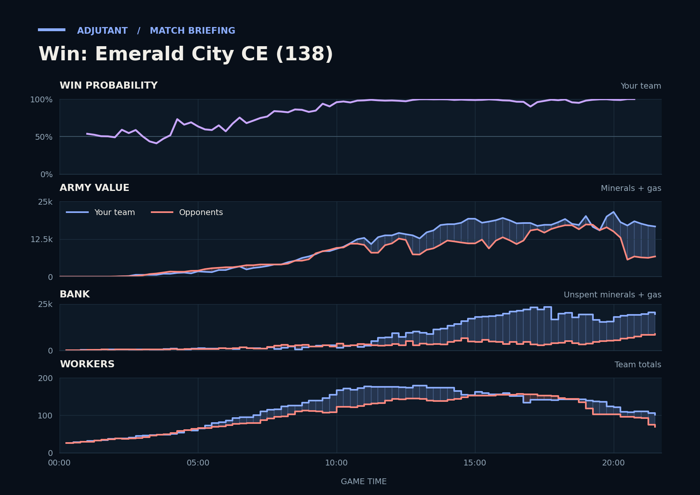

Win: Emerald City CE (138)
Provisional debrief. The full report (timeline, insights and analysis) is being generated.

Cached narration uses different analysis inputs (facts, engine notes, prompts or model settings). It has not been regenerated for this report.
**Win.** Scallop went into the final fight near CritterKill's natural with the bigger army. CritterKill's Battlecruisers and SCVs died there, and CritterKill typed gg.
**Why**
- 3:29–4:46: CritterKill's Siege Tanks and Marines killed your outnumbered Zerglings and Hellions. At 6:00 CritterKill's army was larger.
- 18:14–18:23: CritterKill's Battlecruisers and Critter's Lurkers killed 6 TakeTheTip Lurkers, Hydralisks, Roaches, dropping their army to a low.
- 20:03–21:42: Scallop's army killed CritterKill's Battlecruisers and 29 SCVs, and CritterKill typed gg.
Current engine analysis: Win. Review 3:29–4:46: an even trade (775 killed, 750 lost) while your position improved. The biggest fight came at 19:13–20:30 (14,050 lost, 15,825 killed).